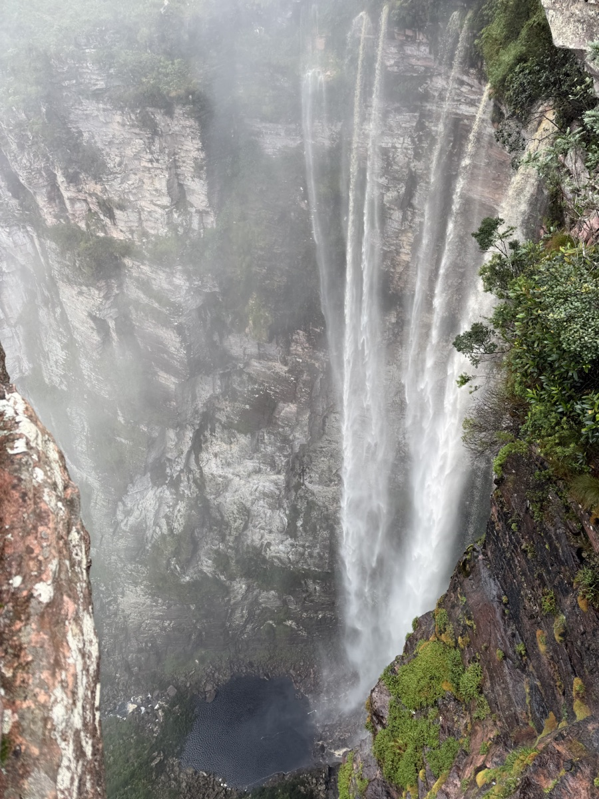
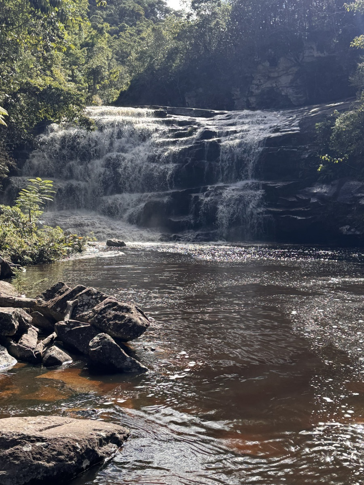
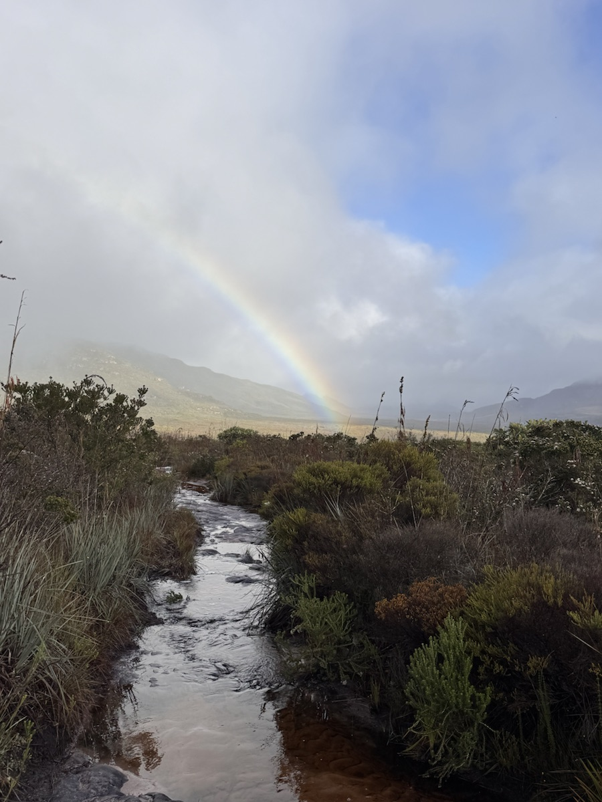
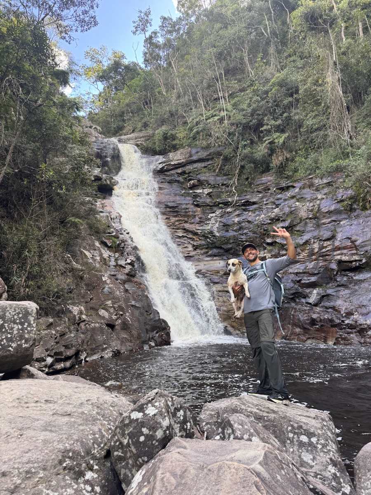
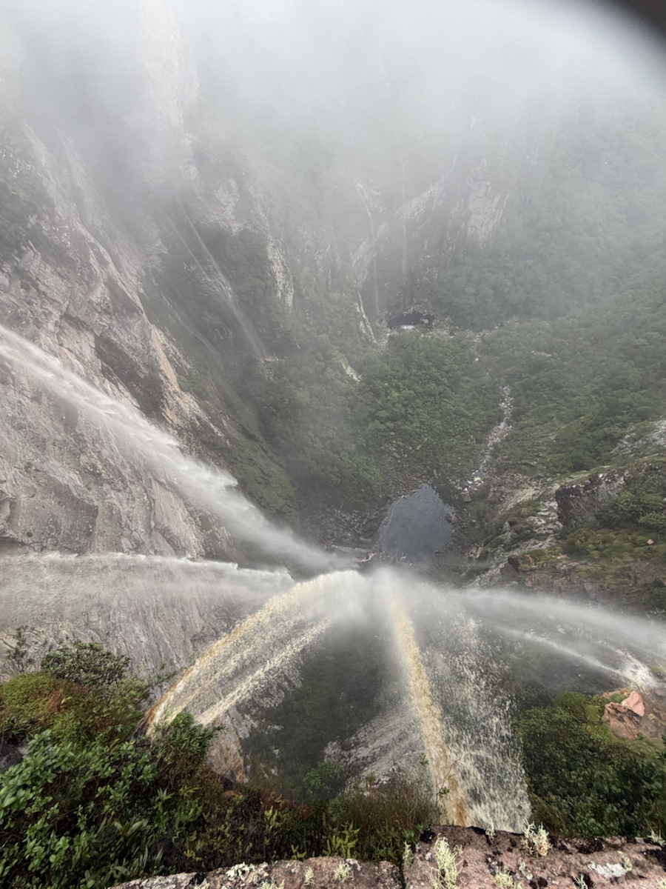
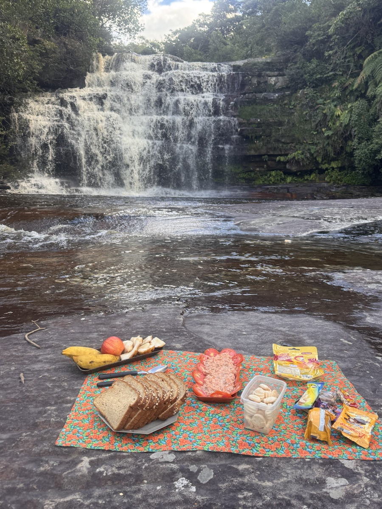
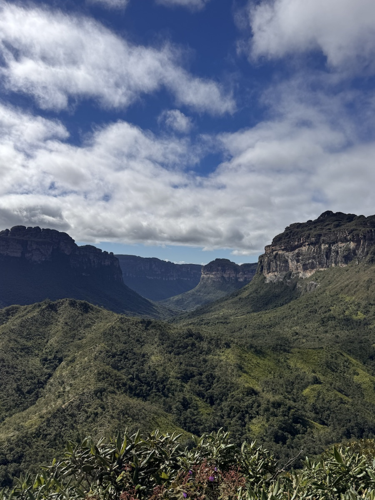
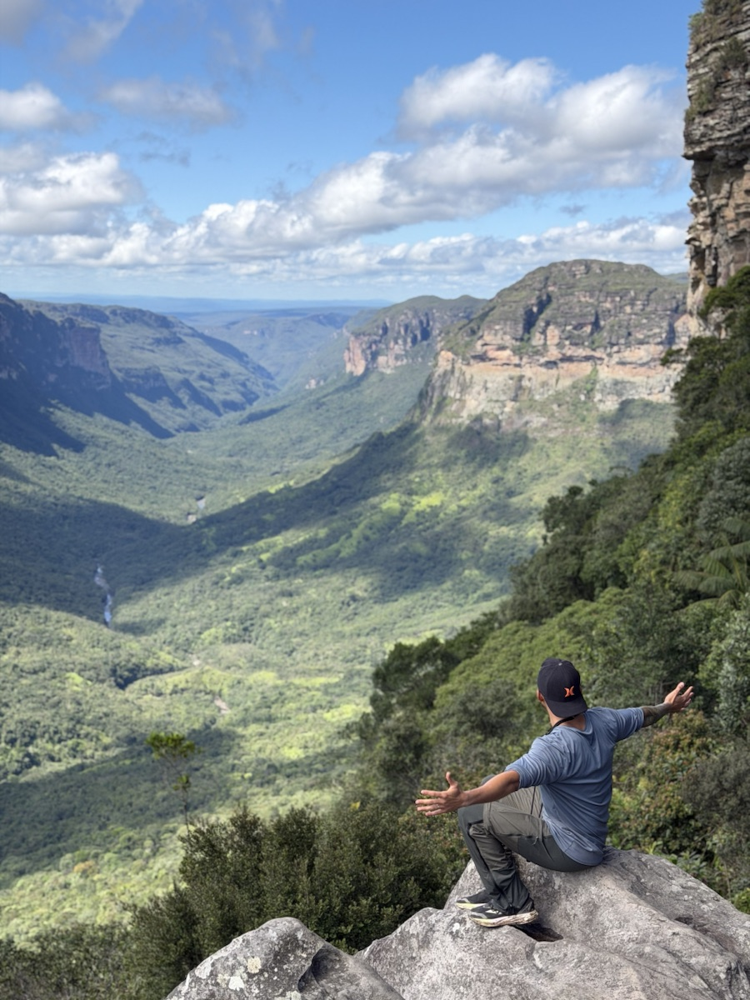

TREKKING E NATUREZA
Vale do Pati
Caminhadas, vales e paisagens marcantes em uma das travessias mais especiais da Chapada Diamantina.
INVESTIMENTOSob atualização
Quero saber mais →A EXPERIÊNCIA
Um vale para atravessar sem pressa.
O Vale do Pati convida a caminhar entre serras, rios e mirantes da Chapada Diamantina, com tempo para observar cada trecho do caminho.
Roteiro previsto
A travessia e seus atrativos serão definidos conforme a saída, o perfil do grupo e as condições do percurso.
O que a proposta incluirá
- Planejamento do percurso e orientações de preparo
- Hospedagem e logística definidos para a saída
- Guias e condutores locais quando contratados
- Suporte da Rud antes da viagem
Condições
Datas, duração, inclusões, preparo necessário e investimento serão confirmados antes da reserva.
Quero viver o Vale do Pati.
Quero receber novidades →FOTOS DO DESTINO
O caminho faz parte da viagem








